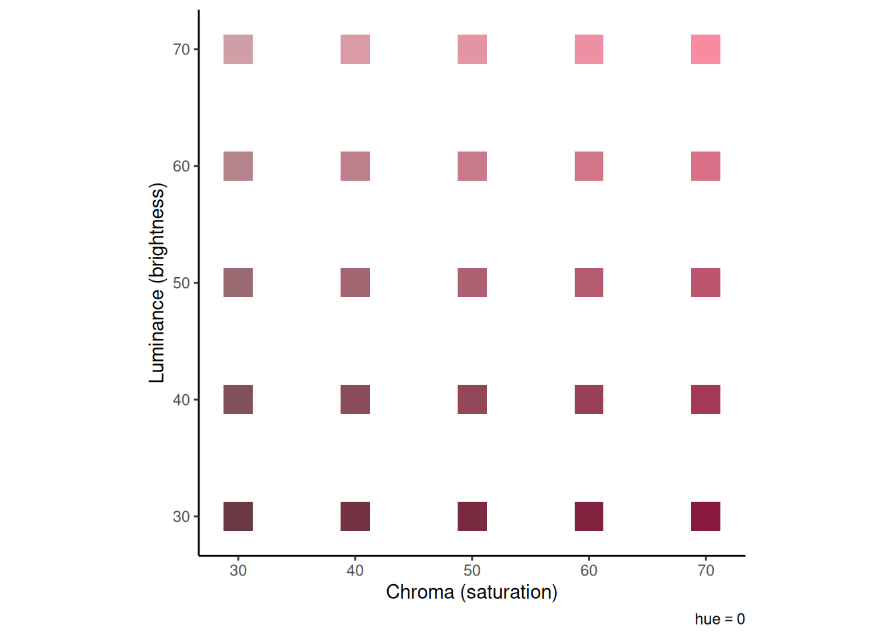
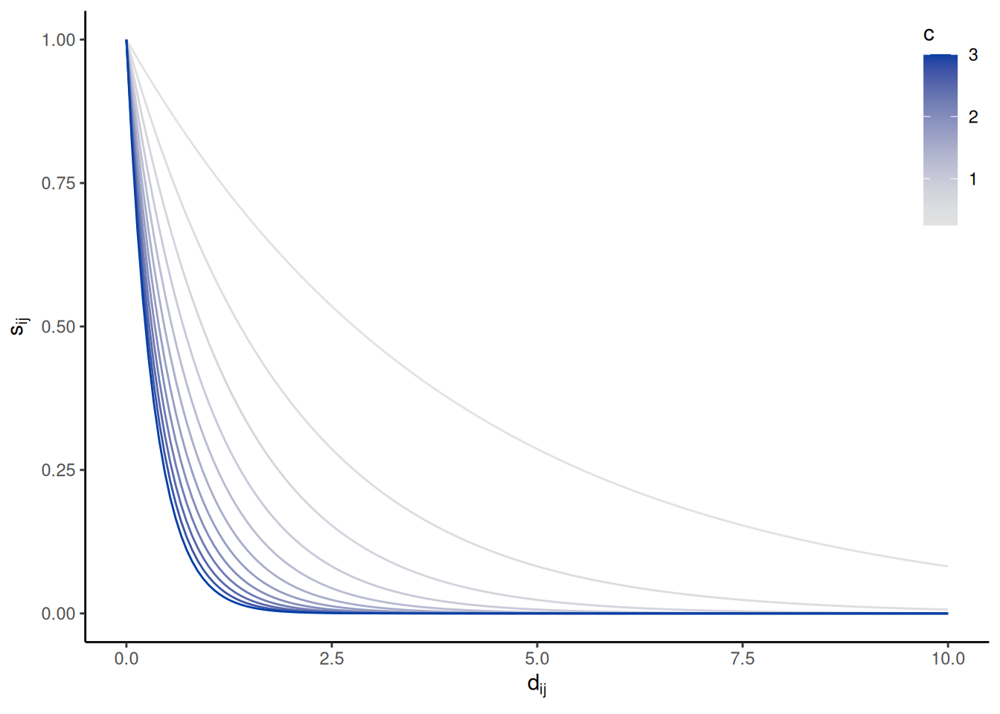
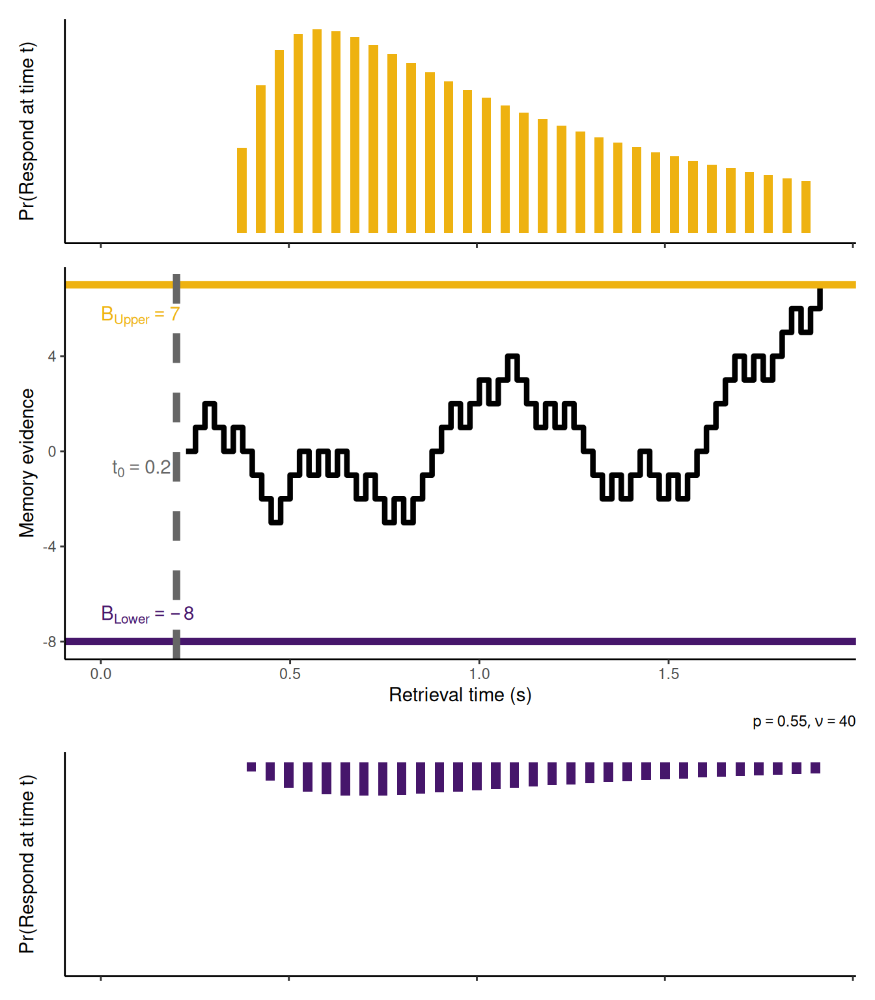
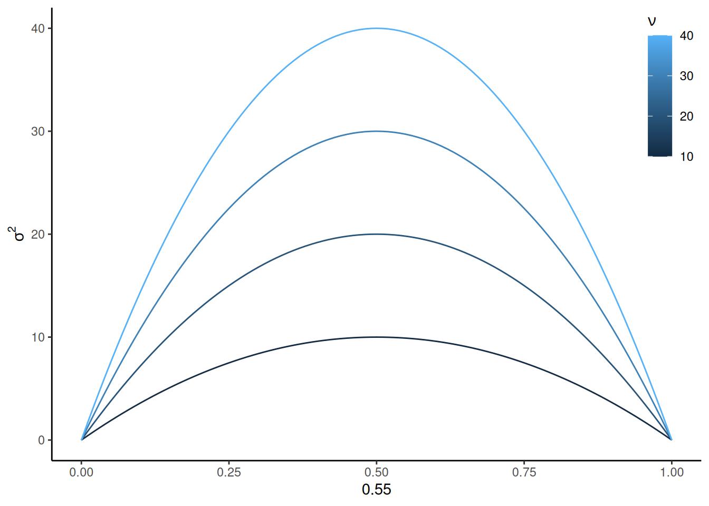
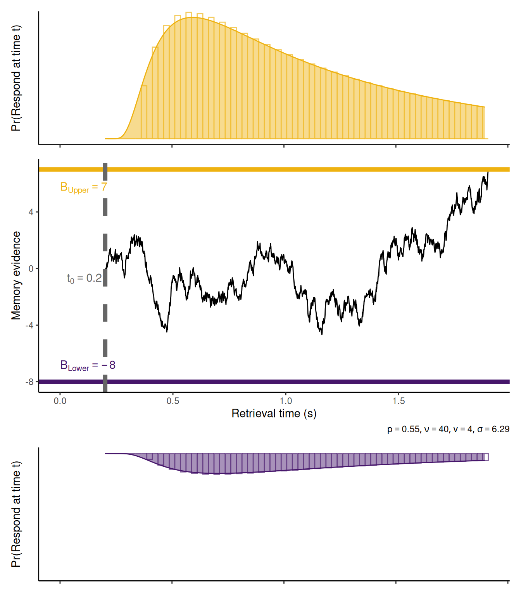

So far, the models we have considered have treated the evidence to be accumulated in an abstract sense. In this chapter, we see an example of a model that has an explicit theory of the evidence that is accumulated in the context of two kinds of task: categorization tasks and recognition memory tasks. This chapter shows how the theory is embedded within either a random walk or a diffusion process in order to couple the theory to behavior in the form of choice and response time. This chapter also provides an opportunity to “look behind the curtain” of the fit_wienr function, in that we will write our own function for calculating the negative log-likelihood (NLL) of a set of choices and RT’s and see how we can use one of R’s built-in optimization functions to find the best-fitting parameters of the model.
The Exemplar-Based Random Walk (EBRW)(Nosofsky et al., 2011; Nosofsky & Palmeri, 1997) is a dynamic extension of the Generalized Context Model (GCM)(Nosofsky, 1986). According to these models, each time you experience an item in a particular context, it leaves a “trace” in memory. This trace is called an “exemplar” or an “instance” and it consists of a record of the values the item had for particular features. When you are presented with a probe item, it activates each of these exemplars in memory in proportion to how similar the features of the probe are to the features of the exemplars in memory.
The EBRW was originally developed to account for choice and RT in categorization tasks. In what follows, we apply EBRW to a recognition task. Recognition decisions are based on the summed activation across all exemplars in memory, which is termed the “familiarity” of the probe. The extent to which familiarity is higher than a criterion determines the extent to which the probe will be recognized as having been seen before. Specifically, familiarity determines the rate at which evidence accumulates toward either a “yes” or “no” decision regarding whether the probe item was seen before. If the accumulated evidence reaches an upper threshold, a “yes” decision is made; otherwise, if the accumulated evidence reaches a lower threshold, a “no” decision is made.
The text below first describes how familiarity is determined by the summed similarity between a probe and the exemplars in memory, using the concrete example of items consisting of patches of color. Then, the dynamics of evidence accumulation are described. These dynamics are first described as a random walk between the thresholds for “yes” and “no” decisions. Then, we illustrate how the same dynamics can be described in continuous time as a diffusion process instead of a random walk (Nosofsky et al., 2014). Finally, we see how the continuous diffusion process makes it easier to fit the parameters of the EBRW model to recognition data.
7.1 Summed similarity
For concreteness, we imagine an experiment in which several color patches were studied. Colors can be described in terms of three features: hue, chroma (or “saturation”), and luminance (or “brightness”). Imagine that you saw many reddish-hued colors that varied in chroma and luminance. According to the EBRW, each of the colors you saw would leave a trace in memory. Each trace would consist of the values of the color you saw along those three dimensions. In this example, all the colors have the same value for “hue”, which is 0. The value of “0” for “hue” corresponds to a reddish color. The colors differ in their values for chroma and luminance, as illustrated in the graph below:
Code
colDF <-expand_grid(h = hue, c =seq(30, 70, length.out =5), l =seq(30, 70, length.out =5)) %>%mutate(col =hcl(h, c, l))colDF %>%ggplot(aes(x = c, y = l, fill = col)) +geom_tile(width =2.5, height =2.5) +scale_fill_identity() +coord_equal() +labs(x ="Chroma (saturation)", y ="Luminance (brightness)", caption =bquote(plain(hue) == .(round(hue))))

Your memory traces can also be written as a matrix, where each row corresponds to an item (color) and each column corresponds to a feature (h for “hue”, c for “chroma”, and l for “luminance”):
These coordinates will often be derived using Multidimensional Scaling (MDS)(Nosofsky, 1992; Shepard, 1962a, 1962b). This type of analysis derives a spatial representation of a set of stimuli on the basis of similarity judgments provided by raters.
7.1.1 Perceived distance and similarity
The perceived distance between any two of these colors is the Euclidean distance between their feature values, weighted by the degree of attention given to each feature: \[
d_{ij} = \sqrt{\sum_{k = 1}^{N_F} w_k \left(x_{ik} - x_{jk} \right)^2}
\] where \(w_k\) is the weight given to feature \(k\), \(x_{ik}\) is the value of item \(i\) on feature \(k\), \(x_{jk}\) is the value of item \(j\) on feature \(k\), \(d_{ij}\) is the perceived distance between items \(i\) and \(j\), and \(N_F\) is the number of features which in this example is 3 (hue, chroma, and luminance). Note also that while Euclidean distance is appropriate for colors, other types of distance metrics may be more appropriate for other kinds of stimuli.
Perceived similarity between two items, \(s_{ij}\), is an exponential function of the psychological distance between those items: \[
s_{ij} = \exp(-c d_{ij})
\] where \(c\) is a sensitivity parameter that controls how quickly perceived similarity decreases with distance, as illustrated in the graph below:
Code
expand_grid(d =seq(0, 10, length.out =151), c =seq(0.25, 3, by =0.25)) %>%mutate(s =exp(-c * d)) %>%ggplot(aes(x = d, y = s, color = c, group = c)) +geom_line() +scale_color_continuous_sequential() +labs(x =expression(d[ij]), y =expression(s[ij])) +theme(legend.position =c(1, 1), legend.justification =c(1, 1))
Warning: A numeric `legend.position` argument in `theme()` was deprecated in ggplot2
3.5.0.
ℹ Please use the `legend.position.inside` argument of `theme()` instead.

7.1.2 Summed similarity
Imagine that you have just been shown two colors from among the set shown earlier. We then present you with a third color—a probe item—and ask whether it was one of the two you just saw. You answer this question on the basis of the summed similarity between the probe item and the two items in memory. The probe item has its own vector of feature values, \(\mathbf{x_q}\). The perceived distance between the probe item and each of the memory items is, as above, the Euclidean distance between the probe’s feature values and those of the memory item: \[
\begin{align}
d_{qj} & = \sqrt{\sum_{k = 1}^{N_F} w_k \left(x_{qk} - x_{jk} \right)^2} \\
s_{qj} & = \exp \left( -c d_{qj} \right) \\
S & = \sum_{j = 1}^{N_M} s_{qj}
\end{align}
\] and, again, the perceived similarity \(s_{qj}\) between the probe \(q\) and memory item \(j\) is an exponential function of perceived distance \(d_{qj}\). Finally, summed similarity \(S\) is the sum of the perceived similarities across all \(N_M\) items in memory.
The graphs below illustrate how this works. The left graph shows contours of equal similarity from each of two study items. The right graph shows summed similarity as a function of the chroma and luminance of a probe item (assuming the same hue).
It is reasonable to believe that some memory traces are stronger than others, likely due to things like primacy and recency. In GCM/EBRW, “strength” is operationalized as a scaling factor \(m_j\) applied to perceived similarity: \[
s_{qj} = m_j \exp \left( -c d_{qj} \right)
\]
Stronger traces have their similarity multiplied by a large value (\(m_j\) is large if trace \(j\) is strong) while weaker traces have their similarity multiplied by a small value (\(m_j\) is small if trace \(j\) is weak). This is illustrated in the pair of graphs below. A probe item does not need to be as similar to a strong item in order to evoke the same level of perceived similarity.
The specificity parameter \(c\) represents the fact that items are assumed to be encoded with some degree of error/uncertainty. Just as items may be encoded with more or less strength, it is reasonable to assume that items can be encoded in memory with more or less specificity. Thus, we add a subscript to the \(c\) parameter corresponding to each study item: \[
s_{qj} = m_j \exp \left( -c_j d_{qj} \right)
\]
If an item is encoded with high specificity, then it will only be perceived as similar to the probe if the probe is very close in psychological space. This is illustrated in the pair of graphs below, where item 2 is not only stronger (\(m_2 = 2\) vs. \(m_1 = 1\)) but also more precise (\(c_2 = 0.1\) vs. \(c_1 = 0.05\)).
7.2 Making a recognition decision: From random walk to diffusion
According to the EBRW, each trace \(j\) in memory races to be retrieved at a rate proportional to its perceived similarity to the probe item, \(s_{qj}\). Traces race not just against one another, but against a criterion. If a memory trace wins the race, this is taken as evidence that the probe item matches something in memory, thus favoring a “yes” recognition response. If the criterion wins the race instead, this is taken as evidence that the probe item does not match anything in memory, thus favoring a “no” recognition response.
The idea is that, if the probe item matches something in memory, then the corresponding memory trace (or one sufficiently similar to probably match) should be able to win against the criterion. If nothing wins against the criterion, then this suggests there are no traces in memory that are a good match to the probe.
7.2.1 Accumulating memory evidence
The outcome of each race is added to a running tally which starts at zero. The value of the tally at any given time \(t\), which we can denote \(x(t)\), constitutes the current state of evidence from memory for making a recognition decision. Assume that each race takes \(\Delta t\) seconds to complete. Each time a memory trace wins the race, the tally gets incremented by one; each time the criterion wins the race, the tally gets decremented by one. Put formally, we can write this process as \[
x\left( t + \Delta t \right) =
\begin{cases}
x\left( t \right) + 1 & \text{if trace wins} \\
x\left( t \right) - 1 & \text{if criterion wins}
\end{cases}
\] where \(x(0) = 0\).
7.2.2 Step probabilities
Although we have specified that whether memory evidence goes up or down depends on whether a trace or the criterion wins the race, we have not yet specified how the outcome of that race is determined. The winner of each race is random but depends on the similarity \(s_{qj}\) between each trace \(j\) and the probe \(q\). Specifically, trace \(j\) wins the race with probability: \[
\frac{s_{qj}}{\sum_{k = 1}^N s_{qk} + \kappa}
\] where \(\kappa\) is a nonnegative number that represents how stringent the criterion is. In other words, the equation above says that the probability that trace \(j\) wins the race is the similarity between trace \(j\) and the probe \(q\) divided by the summed similarity across all traces plus the criterion \(\kappa\). In a sense, we can think of the criterion is like a “virtual memory trace” that races alongside the \(N\) actual memory traces.
Remember that we increment memory strength whenever any trace wins the race, regardless of which one it is. Because only one trace can win each race, the probability that any trace wins is just the sum of the probabilities of winning across all \(N\) traces, i.e.: \[
p = \sum_{j = 1}^N \frac{s_{qj}}{\sum_{k = 1}^N s_{qk} + \kappa} = \frac{1}{\sum_{k = 1}^N s_{qk} + \kappa} \left( \sum_{j = 1}^Ns_{qj} \right) = \frac{S}{S + \kappa}
\] where \(S = \sum_{j = 1}^N s_{qj}\) is the summed similarity across all \(N\) traces. The quantity \(p\) is the probability that the random walk takes a step up.
The EBRW models the speed of decision making in terms of how many races must be run until the accumulated win advantage in favor of either a “yes” or “no” response reaches a decision boundary. To convert this to “real time”, we must say how long each race takes and allow for a residual time. Above, we used \(\Delta t\) to stand for the amount of time (in seconds) each race takes to run. It will be convenient later to think instead of \(\nu = \frac{1}{\Delta t}\), where \(\nu\) is the number of races per second.
The figure below shows an example of how memory evidence evolves during a single trial in which \(p = 0.55\), \(\nu = 40\), \(B_{Upper} = 7\), \(B_{Lower} = -8\), and \(t_0 = 0.2\). In addition, the graphs above and below the evidence trajectory illustrate the relative frequency with which, across many identical trials, each type of response would be made at each unit of time. Note that these distributions are discrete because the random walk operates in discrete time intervals, each of duration \(\Delta t\) (which in this example is \(\Delta t = \frac{1}{\nu} = 0.025\) seconds).
Code
set.seed(1)nu <-40p <-0.55B <-c(-8, 7)resid <-0.2### RT distributionsY_rw <-seq(B[1], B[2])P_rw <-matrix(0, nrow =length(Y_rw), ncol =length(Y_rw))P_rw[cbind(2:(nrow(P_rw) -1), 1:(ncol(P_rw) -2))] <-1- pP_rw[cbind(2:(nrow(P_rw) -1), 3:ncol(P_rw))] <- pP_rw[1, 1] <- P_rw[nrow(P_rw), ncol(P_rw)] <-1### Simulationwhile (TRUE) { winner <-0 x_rw <-0while (TRUE) { s <-2* (runif(n =1) < p) -1 x_rw <-c(x_rw, x_rw[length(x_rw)] + s)if (x_rw[length(x_rw)] <= B[1]) { winner <-1break } elseif (x_rw[length(x_rw)] >= B[2]) { winner <-2break } }if (winner ==2& (length(x_rw) / nu) >1.5) {break }}RT_rw <-matrix(0, nrow =2, ncol =length(x_rw))Z_rw <-1*c(Y_rw ==0)for (i in1:length(x_rw)) { Z_rw <- Z_rw %*% P_rw RT_rw[1, i] <- Z_rw[1] RT_rw[2, i] <- Z_rw[length(Z_rw)]}dRT_rw <-apply(RT_rw, MARGIN =1, FUN = diff) * nu /2rtPlot1 <-tibble(t = resid +1:length(x_rw) / nu, p =c(0, dRT_rw[,2])) %>%ggplot(aes(x = t, y = p)) +geom_col(fill ="#eeb211", color =NA, width =1/ nu) +coord_cartesian(xlim =c(0, NA), ylim =c(0, max(c(dRT_rw)))) +labs(x =NULL, y ="Pr(Respond at time t)") +theme(axis.text =element_blank(), axis.ticks.y =element_blank())rtPlot0 <-tibble(t = resid +1:length(x_rw) / nu, p =c(0, dRT_rw[,1])) %>%ggplot(aes(x = t, y = p)) +geom_col(fill ="#46166b", color =NA, width =1/ nu) +labs(x =NULL, y ="Pr(Respond at time t)") +scale_x_continuous(limits =c(0, NA)) +scale_y_reverse(limits =c(max(c(dRT_rw)), 0)) +theme(axis.text =element_blank(), axis.ticks.y =element_blank())rwPlot <-tibble(t = resid +1:length(x_rw) / nu, x = x_rw) %>%ggplot(aes(x = t, y = x)) +geom_step(linewidth =1.5) +geom_hline(yintercept = B[2], linetype ="solid", color ="#eeb211", linewidth =2) +geom_hline(yintercept = B[1], linetype ="solid", color ="#46166b", linewidth =2) +geom_vline(xintercept = resid, linetype ="dashed", color ="#666666", linewidth =2) +geom_text(data =tibble(x =0, y = B[2], label =paste0("B[Upper] == ", B[2])), mapping =aes(x = x, y = y, label = label), color ="#eeb211", inherit.aes =FALSE, parse =TRUE, hjust =0, vjust =2) +geom_text(data =tibble(x =0, y = B[1], label =paste0("B[Lower] == ", B[1])), mapping =aes(x = x, y = y, label = label), color ="#46166b", inherit.aes =FALSE, parse =TRUE, hjust =0, vjust =-1) +geom_text(data =tibble(x = resid, y =0, label =paste0("t[0] == ", resid)), mapping =aes(x = x, y = y, label = label), color ="#666666", inherit.aes =FALSE, parse =TRUE, hjust =1.1, vjust =1.5) +coord_cartesian(xlim =c(0, NA)) +labs(x ="Retrieval time (s)", y ="Memory evidence", caption =bquote(list(p == .(p), nu == .(nu))))rtPlot1 + rwPlot + rtPlot0 +plot_layout(ncol =1, heights =c(1, 1.75, 1))

7.2.3 From discrete random walk to continuous diffusion
A random walk takes discrete-valued steps either up or down in discrete units of time. A Wiener diffusion process takes continuous-valued steps sampled from a normal distribution in infinitely small units of time, thus effectively operating in continuous time. We are going to approximate the discrete EBRW with a continuous diffusion process (so technically we should call this model the EBD for Exemplar-Based Diffusion, but we will keep calling it the EBRW for posterity).
In going from a random walk to a diffusion model, we are making an important psychological claim: We are saying that, instead of memory evidence arriving in discrete units at regular intervals, memory evidence is a continuous value that continually evolves as new information arrives. We can think of this as saying that, instead of only knowing the outcome of each race, you can see who is ahead and who is behind at any given time; this is the move from discrete time to continuous time. Moreover, instead of only scoring each race as a win or loss for the memory traces, the races are assigned a continuous value depending on how clear the winner is; this is the move from discrete evidence to continuous evidence.
7.2.3.1 Mean and standard deviation of diffusion
We can write the update equation for the random walk like we did above: \[
\begin{align}
x \left( t + \Delta t \right) & = \begin{cases} x(t) + 1 & \text{with probability } p \\ x(t) - 1 & \text{with probability } 1 - p \end{cases} \\
x \left( t + \Delta t \right) - x(t) & = \begin{cases} 1 & \text{with probability } p \\ -1 & \text{with probability } 1 - p \end{cases} \\
x \left( t + \Delta t \right) - x(t) & \sim 2 \times \text{Bernoulli} \left( p \right) - 1
\end{align}
\] where we have rearranged terms and used the shorthand in the final line to emphasize the idea that each step of the random walk can be thought of as a sample from a Bernoulli distribution with parameter \(p\) that is then transformed from \(\lbrace 0, 1 \rbrace\) to \(\lbrace -1, 1 \rbrace\).
To turn this into a continuous diffusion process, we need to swap out the transformed Bernoulli distribution with a normal distribution that has the same mean and variance. The mean is \(2 p - 1\) and the variance is \(4 p \left(1 - p \right)\). One more thing: remember that we run \(\nu\) races per second, so we need to multiply the mean and variance by \(\nu\). Therefore, the mean drift rate is \(v = \nu \left(2 p - 1 \right)\) and the variance is \(\sigma^2 = 4 \nu p (1 - p)\).
Note that this is different from the typical diffusion model where the variance of the evidence samples is arbitrarily fixed to 1. Notice an important property of this variance: It is largest when \(p = 0.5\) and approaches zero as \(p\) approaches either 0 or 1. In other words, the more uncertain the outcome of each race, the more noise there is in the diffusion. This is illustrated below:
Code
expand_grid(p =seq(0, 1, length.out =101), nu =seq(10, 40, by =10)) %>%mutate(sigma2 =4* nu * p * (1- p)) %>%ggplot(aes(x = p, y = sigma2, color = nu, group = nu)) +geom_line() +labs(x = p, y =expression(sigma^2), color =expression(nu)) +theme(legend.position =c(1, 1), legend.justification =c(1, 1))

To summarize, the difference between the random walk and the diffusion is that we have swapped out a discrete binomial distribution of evidence increments per unit time with a continuous normal distribution of evidence increments per unit time. Everything else is the same: You still respond “yes” if and when the accumulated evidence \(x(t)\) reaches either the upper boundary or the lower boundary.
7.2.3.2 Closeness of predictions
To illustrate how well the diffusion process approximates the random walk, the graphs below show the diffusion approximation to the same random walk example used above. The smooth lines in the upper and lower graphs are the probability of responding per unit time (i.e., the probability density function) according to the Wiener diffusion model. The open bars are the same probabilities from the random walk. The diffusion model’s predictions hew very closely to those of the random walk!
Code
mu <- nu * (2* p -1)sigma2 <-4* nu * p * (1- p)boundsep <- B[2] - B[1]bias <- (0- B[1]) / (B[2] - B[1])delta_t <-0.001while (TRUE) { winner_diff <-NA x_diff <-0while (TRUE) { x_diff <-c(x_diff, x_diff[length(x_diff)] +rnorm(n =1, mean = mu * delta_t, sd =sqrt(sigma2 * delta_t)))if (x_diff[length(x_diff)] <= B[1]) { winner_diff <-1break } elseif (x_diff[length(x_diff)] >= B[2]) { winner_diff <-2break } }if (winner == winner_diff &abs((length(x_diff) * delta_t) - (length(x_rw) / nu)) < (1/ nu)) {break }}x_diff <-pmax(pmin(x_diff, B[2]), B[1])t <-seq(1, length(x_diff)) * delta_tdRT_diff <-cbind(WienerPDF(t = t, response ="lower", a = boundsep /sqrt(sigma2), v = mu /sqrt(sigma2), w = bias)$value,WienerPDF(t = t, response ="upper", a = boundsep /sqrt(sigma2), v = mu /sqrt(sigma2), w = bias)$value)rtPlot1 <-tibble(t = resid + t, p = dRT_diff[,2]) %>%ggplot(aes(x = t, y = p)) +geom_col(data =tibble(t = resid +1:length(x_rw) / nu, p =c(0, dRT_rw[,2])), color ="#eeb211aa", fill =NA, width =1/ nu) +geom_area(fill ="#eeb21177", color ="#eeb211") +coord_cartesian(xlim =c(0, NA), ylim =c(0, max(c(dRT_diff)))) +labs(x =NULL, y ="Pr(Respond at time t)") +theme(axis.text =element_blank(), axis.ticks.y =element_blank())rtPlot0 <-tibble(t = resid + t, p = dRT_diff[,1]) %>%ggplot(aes(x = t, y = p)) +geom_col(data =tibble(t = resid +1:length(x_rw) / nu, p =c(0, dRT_rw[,1])), color ="#46166baa", fill =NA, width =1/ nu) +geom_area(fill ="#46166b77", color ="#46166b") +labs(x =NULL, y ="Pr(Respond at time t)") +scale_x_continuous(limits =c(0, NA)) +scale_y_reverse(limits =c(max(c(dRT_diff)), 0)) +theme(axis.text =element_blank(), axis.ticks.y =element_blank())rwPlot <-tibble(t = resid + t, x = x_diff) %>%ggplot(aes(x = t, y = x)) +geom_line() +geom_hline(yintercept = B[2], linetype ="solid", color ="#eeb211", linewidth =2) +geom_hline(yintercept = B[1], linetype ="solid", color ="#46166b", linewidth =2) +geom_vline(xintercept = resid, linetype ="dashed", color ="#666666", linewidth =2) +geom_text(data =tibble(x =0, y = B[2], label =paste0("B[Upper] == ", B[2])), mapping =aes(x = x, y = y, label = label), color ="#eeb211", inherit.aes =FALSE, parse =TRUE, hjust =0, vjust =2) +geom_text(data =tibble(x =0, y = B[1], label =paste0("B[Lower] == ", B[1])), mapping =aes(x = x, y = y, label = label), color ="#46166b", inherit.aes =FALSE, parse =TRUE, hjust =0, vjust =-1) +geom_text(data =tibble(x = resid, y =0, label =paste0("t[0] == ", resid)), mapping =aes(x = x, y = y, label = label), color ="#666666", inherit.aes =FALSE, parse =TRUE, hjust =1.1, vjust =1.5) +coord_cartesian(xlim =c(0, NA)) +labs(x ="Retrieval time (s)", y ="Memory evidence", caption =bquote(list(p == .(p), nu == .(nu), v == .(signif(mu, 3)), sigma == .(signif(sqrt(sigma2), 3)))))rtPlot1 + rwPlot + rtPlot0 +plot_layout(ncol =1, heights =c(1, 1.75, 1))

7.3 Implementation in R
To find the EBRW parameters that best fit the recognition data from a participant, let’s implement the diffusion version of the EBRW in R using the WienR package. We must define a function to compute the negative log-likelihood (NLL) for a set of observed responses/RT’s, given a set of parameters. The function itself, in outline form, looks like the one below. I have written comments for the things that the function needs to accomplish to get from what is given to the function (in the parentheses following function) to what the function needs to return at the end.
For example purposes, this implementation doesn’t include all of the bells and whistles that the full model includes. It will not allow for varying trace strength nor will it include attention weights on each dimension. This is meant to illustrate the basic idea that we can define a diffusion model in which the drift rates are derived from a theory, rather than just estimated.
Code
# Function arguments:# par: this is a named vector of parameter values# stim_coords: this is a matrix of the coordinates of the stimuli, where each row is a stimulus and each column is a dimension# study_items: this is a matrix where each row is a trial and each column indicates the items that were studied on that trial# probe_item: this is a vector giving the index of the probe item on each trial# response: this is a vector where each value is 2 or 1, depending on whether the participant responsed "yes" (2) or "no" (1) on that trial# rt: this is a vector of the response times from each trialebrw_nll <-function(par, stim_coords, study_items, probe_item, response, rt) {# 1. Compute the mean and SD of the drift for each trial# 2. Calculate the log-likelihood of each observed response/RT on each trial# 3. Return final resultreturn(nll)}
Let’s now fill in each of those sections in turn.
7.3.1 Parameters
The vector par that is the first argument to the ebrw_nll function should be a named vector that has the following entries:
Code
par <-c("retrieval_rate"=3, # This is the "nu" parameter"a"=2, # Response caution"w"=0.5, # Response bias"t0"=0, # Residual time"specificity"=1, # Specificity of memory representations (the "c" parameter)"criterion"=1# Criterion (the "kappa" parameter))
7.3.2 Computing the mean and SD of the drift for each trial
Recall that the drift rates depend on the distances between each of the stimulus items. Since the function is provided with stim_coords, we can make our job a little easier by using the dist function to compute the matrix of distances between all pairs of items. This saves us from “recomputing” the distances between pairs of items that occur on multiple trials:
Code
stim_dists <-as.matrix(dist(stim_coords))
Then, to compute the summed similarity for each trial i, we can use a for loop:
Code
evidence_mean <-rep(0, length(probe_item))evidence_sd <-rep(0, length(probe_item))for (i in1:length(probe_item)) { summed_sim <-sum(exp(-par["specificity"] * stim_dists[probe_item[i], study_items[i,]])) p <- summed_sim / (summed_sim + par["criterion"]) evidence_mean[i] <- par["retrieval_rate"] * (2* p -1) evidence_sd[i] <-2*sqrt(par["retrieval_rate"] * p * (1- p))}
We have now completed the second step of writing the ebrw_nll function, as summarized below.
Code
# Function arguments:# par: this is a named vector of parameter values# stim_coords: this is a matrix of the coordinates of the stimuli, where each row is a stimulus and each column is a dimension# study_items: this is a matrix where each row is a trial and each column indicates the items that were studied on that trial# probe_item: this is a vector giving the index of the probe item on each trial# response: this is a vector where each value is 2 or 1, depending on whether the participant responsed "yes" (2) or "no" (1) on that trial# rt: this is a vector of the response times from each trialebrw_nll <-function(par, stim_coords, study_items, probe_item, response, rt) {# 1. Compute the mean and SD of the drift for each trial stim_dists <-as.matrix(dist(stim_coords)) evidence_mean <-rep(0, length(probe_item)) evidence_sd <-rep(0, length(probe_item))for (i in1:length(probe_item)) { summed_sim <-sum(exp(-par["specificity"] * stim_dists[probe_item[i], study_items[i,]])) p <- summed_sim / (summed_sim + par["criterion"]) evidence_mean[i] <- par["retrieval_rate"] * (2* p -1) evidence_sd[i] <-2*sqrt(par["retrieval_rate"] * p * (1- p)) }# 2. Calculate the log-likelihood of each observed response/RT on each trial# 3. Return final resultreturn(nll)}
7.3.3 Calculating the log-likelihood
This step is almost too easy. We are using the WienR package, which means we can use the WienerPDF function like we’ve seen already. There is only one thing we need to do: The WienerPDF function assumes that the standard deviation of the diffusion is always equal to one. As such, we need to standardize the drift rate and boundary separation before we send them to the WienerPDF function by dividing each by evidence_sd:
Code
# Function arguments:# par: this is a named vector of parameter values# stim_coords: this is a matrix of the coordinates of the stimuli, where each row is a stimulus and each column is a dimension# study_items: this is a matrix where each row is a trial and each column indicates the items that were studied on that trial# probe_item: this is a vector giving the index of the probe item on each trial# response: this is a vector where each value is 2 or 1, depending on whether the participant responsed "yes" (2) or "no" (1) on that trial# rt: this is a vector of the response times from each trialebrw_nll <-function(par, stim_coords, study_items, probe_item, response, rt) {# 1. Compute the mean and SD of the drift for each trial stim_dists <-as.matrix(dist(stim_coords)) evidence_mean <-rep(0, length(probe_item)) evidence_sd <-rep(0, length(probe_item))for (i in1:length(probe_item)) { summed_sim <-sum(exp(-par["specificity"] * stim_dists[probe_item[i], study_items[i,]])) p <- summed_sim / (summed_sim + par["criterion"]) evidence_mean[i] <- par["retrieval_rate"] * (2* p -1) evidence_sd[i] <-2*sqrt(par["retrieval_rate"] * p * (1- p)) }# 2. Calculate the log-likelihood of each observed response/RT on each trial result <-WienerPDF(t = rt,response = response,a = par["a"] / evidence_sd,w = par["w"],v = evidence_mean / evidence_sd,t0 = par["t0"] )# 3. Return final resultreturn(-sum(result$logvalue))}
7.3.4 Error-checking
It is important for us to do some error checking. Sometimes, a particular combination of parameters will make it impossible for the WienerPDF function to calculate the log-likelihood. When that happens, it gives an error. In essence, such a result tells us that the model cannot work with that combination of parameters. Thus, rather than an “error”, that is really telling us that we should assign zero likelihood to that set of parameters, which is equivalent to a log-likelihood of \(-\infty\).
We can do that kind of check in R by putting the WienerPDF function call within try(). If the WienerPDF function gives an error, then the result that gets stored in trial_wiener is also an error. Otherwise, it just gives us the log-likelihoods that we want.
Let’s set up an “if…else” structure to do this check:
Code
# Function arguments:# par: this is a named vector of parameter values# stim_coords: this is a matrix of the coordinates of the stimuli, where each row is a stimulus and each column is a dimension# study_items: this is a matrix where each row is a trial and each column indicates the items that were studied on that trial# probe_item: this is a vector giving the index of the probe item on each trial# response: this is a vector where each value is 2 or 1, depending on whether the participant responsed "yes" (2) or "no" (1) on that trial# rt: this is a vector of the response times from each trialebrw_nll <-function(par, stim_coords, study_items, probe_item, response, rt) {# 1. Compute the mean and SD of the drift for each trial stim_dists <-as.matrix(dist(stim_coords)) evidence_mean <-rep(0, length(probe_item)) evidence_sd <-rep(0, length(probe_item))for (i in1:length(probe_item)) { summed_sim <-sum(exp(-par["specificity"] * stim_dists[probe_item[i], study_items[i,]])) p <- summed_sim / (summed_sim + par["criterion"]) evidence_mean[i] <- par["retrieval_rate"] * (2* p -1) evidence_sd[i] <-2*sqrt(par["retrieval_rate"] * p * (1- p)) }# 2. Calculate the log-likelihood of each observed response/RT on each trial result <-try(WienerPDF(t = rt,response = response,a = par["a"] / evidence_sd,w = par["w"],v = evidence_mean / evidence_sd,t0 = par["t0"] ))# 3. Return final resultif (class(result) =="try-error") {return(Inf) } else {return(-sum(result$logvalue)) }}
7.4 A worked example
This example uses a single participant’s data from Experiment 2 of Gillespie & Cox (2024). In this experiment, each participant made similarity ratings between all pairs of eight items. Each item was an “auditory texture” constructed via Fourier synthesis. We applied Multidimensional Scaling to the similarity ratings from each participant to assign, for each participant, a set of coordinates to each item. The coordinates are such that items that are farther from one another were associated with lower similarity ratings and those that were closer to one another were assigned higher similarity ratings. Be sure to check out the paper itself for additional detail on how this was done, and how we decided that the multidimensional space in which the stimuli are represented had 3 dimensions. These coordinates will be used for the stim_coords argument of the ebrw_nll function.
In addition to providing similarity ratings, each participant engaged in a recognition memory task. On each trial of this task, the participant heard two auditory textures, presented sequentially. They then heard a “probe” sound and had to decide whether or not it was one of the two sounds that had just been presented. It is these recognition data that we will model with the EBRW.
You can grab the data yourself by running the following chunk of code to download it and load it into your R workspace:
to_plot <-as.data.frame(stim_coords)colnames(to_plot) <-paste("Dimension", 1:ncol(stim_coords))rownames(to_plot) <-paste("Item", 1:nrow(stim_coords))plot_ly(data = to_plot, x =~`Dimension 1`, y =~`Dimension 2`, z =~`Dimension 3`, type ="scatter3d", text =rownames(to_plot))
No scatter3d mode specifed:
Setting the mode to markers
Read more about this attribute -> https://plotly.com/r/reference/#scatter-mode
In addition for each trial of the recognition task, the study_items matrix tells us which of the two items had been presented as part of the set to be remembered and the probe_item vector tells us what the probe item was. These numbers refer to row in the stim_coords matrix.
Finally, the rt and response vectors record the response time (in seconds) and the response (where 2 is “yes” and 1 is “no”) produced by this participant on each trial.
7.4.2 Finding optimal parameters
The version of the EBRW that we applied in our paper is a bit more complex than the one we will use here, which only has six free parameters. We will use R’s built-in nlminb function to find the best-fitting values of these parameters. To do this, we need to specify initial values for each parameter in a named vector, as shown below. These initial values don’t necessarily need to be anything in particular as long as they don’t cause the ebrw_nll function to return an error or a value of Inf.
Code
init_par <-c("retrieval_rate"=3, # This is the "nu" parameter"a"=2, # Response caution"w"=0.5, # Response bias"t0"=0, # Residual time"specificity"=1, # Specificity of memory representations (the "c" parameter)"criterion"=1# Criterion (the "kappa" parameter))
We also need to specify the upper and lower values that each of these parameters could possibly take, as shown below:
Code
lower <-c("retrieval_rate"=0, # This is the "nu" parameter"a"=0, # Response caution"w"=0, # Response bias"t0"=0, # Residual time"specificity"=0, # Specificity of memory representations (the "c" parameter)"criterion"=0# Criterion (the "kappa" parameter))upper <-c("retrieval_rate"=Inf, # This is the "nu" parameter"a"=Inf, # Response caution"w"=1, # Response bias"t0"=min(rt), # Residual time"specificity"=Inf, # Specificity of memory representations (the "c" parameter)"criterion"=Inf# Criterion (the "kappa" parameter))
Note that these upper and lower values can be Infinite if necessary!
Finally, let’s use the nlminb function, which we need to provide with each of the ingredients we prepared above. We will save the result as fit:
Code
fit <-nlminb(start = init_par, # Need to provide initial guess of parameter valuesobjective = ebrw_nll, # Tell R the name of the function to optimizelower = lower, # The lower bounds on each parameterupper = upper, # The upper bounds on each parameterstim_coords = stim_coords, # The coordinates of each stimulusrt = rt, # The vector of RT's on each trialresponse = response, # The vector of responses on each trialstudy_items = study_items, # The study items on each trialprobe_item = probe_item # The probe item on each trial)
Warning in nlminb(start = init_par, objective = ebrw_nll, lower = lower, :
NA/NaN function evaluation
The beauty of this result is that we have explained why this participant did what they did in terms of
Their internal representations of the stimuli, modeled as coordinates in a latent psychological space.
A decision process that involves continuously sampling exemplars from memory until a criterion is reached.
Gillespie, N. F., & Cox, G. E. (2024). Perception and memory for novel auditory stimuli: Similarity, serial position, and list homogeneity. PsyArXiv. https://doi.org/10.31234/osf.io/n294a
Nosofsky, R. M. (1986). Attention, similarity, and the identification-categorization relationship. Journal of Experimental Psychology: General, 115(1), 39–57.
Nosofsky, R. M. (1992). Similarity scaling and cognitive process models. Annual Review of Psychology, 43, 25–53.
Nosofsky, R. M., Cox, G. E., Cao, R., & Shiffrin, R. M. (2014). An exemplar-familiarity model predicts short-term and long-term probe recognition across diverse forms of memory search. Journal of Experimental Psychology: Learning, Memory, and Cognition, 40(6), 1524–1539.
Nosofsky, R. M., Little, D. R., Donkin, C., & Fific, M. (2011). Short-term memory scanning viewed as exemplar-based categorization. Psychological Review, 118(2), 280–315.
Nosofsky, R. M., & Palmeri, T. J. (1997). An exemplar-based random walk model of speeded classification. Psychological Review, 104(2), 266–300.
Shepard, R. N. (1962a). The analysis of proximities: Multidimensional scaling with an unknown distance function. I. Psychometrika, 27(2), 125–140. https://doi.org/https://doi.org/10.1007/BF02289630
Shepard, R. N. (1962b). The analysis of proximities: Multidimensional scaling with an unknown distance function. II. Psychometrika, 27(3), 219–246. https://doi.org/https://doi.org/10.1007/BF02289621